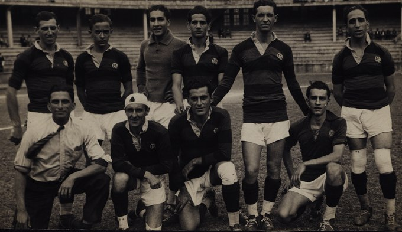
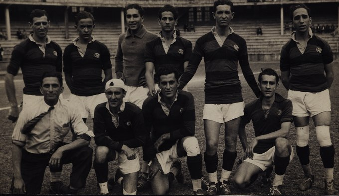

História do Clube
A Origem
Em fins do século XIX o remo dominava o Rio de Janeiro. O futebol começava apenas a aparecer em alguns clubes, mas ainda era olhado com certo temor, pois não estava sendo recebido com entusiasmo pela sociedade carioca. A criação de um grupo organizado com o objetivo de disputar competições de remo com clubes de outros bairros surgiu entre jovens do bairro do Flamengo, no Café Lamas, no Largo do Machado.
Nestor de Barros, José Agostinho Pereira da Cunha, Felisberto Laport, Augusto Lopes, Mário Spindola e José Félix da Cunha Meneses compraram um barco, chamaram-no de "Pherusa" e o reformaram.
Em 6 de outubro de 1895 os antes citados, juntamente com Maurício Rodrigues Pereira e Joaquim Bahia, saíram da Ponta do Caju, e com o tempo desfavorável, foram rumo à Praia do Flamengo, mas o vento fez o barco virar. Bahia nadou até a praia para conseguir ajuda e chegou algumas horas depois, mas a chuva parou rapidamente e outro barco, o "Leal", resgatou os jovens e o que tinha restado da Pherusa. Então foi iniciada uma nova reforma da embarcação, mas ela foi roubada e desapareceu.
A Fundação
Um novo barco foi comprado e recebeu o nome de "Scyra". Na noite de 17 de novembro de 1895, muita gente estava em um dos corredores da casa número 22 da Praia do Flamengo, onde Nestor de Barros morava num dos quartos. Lá, há muito tempo, já haviam abrigado "Pherusa", e agora guardavam "Scyra". A reunião teve por objetivo a fundação do Grupo de Regatas do Flamengo. Naquela mesma noite foi eleita a primeira diretoria:
• Domingos Marques de Azevedo; presidente
• Francisco Lucci Colas; vice-presidente
• Nestor de Barros; secretário
• Felisberto Cardoso Laport; tesoureiro
 

Além dos eleitos, foram destacados como sócios-fundadores, José Agostinho Pereira da Cunha, Napoleão Coelho de Oliveira, Mário Espínola, José Maria Leitão da Cunha, Carlos Sardinha, Maurício Rodrigues Pereira, Desidério Guimarães, Eduardo Sardinha, Emido José Barbosa, José Félix Cunha Meneses, George Leuzinger, Augusto Lopes da Silveira, João de Almeida Lustosa e José Augusto Chairéo, sendo que os três últimos faltaram à reunião, mas foram considerados sócios-fundadores. Na oportunidade ficou estabelecido que a data oficial da fundação do clube seria 15 de novembro, feriado nacional.
As cores iniciais foram azul e ouro em listras horizontais bem largas, entretanto, em 1898, por proposta de Nestor de Barros, houve mudança para as atuais: vermelho e preto.
Novos barcos foram sendo comprados e o Mengo começou a destacar-se nas competições. Na I Regata do Campeonato Náutico do Brasil, no dia 5 de junho de 1898, conquistou a sua primeira vitória, com "Irerê", uma baleeira a dois remos. Anteriormente o Flamengo só havia obtido colocações secundárias e muitos segundos lugares, o que lhe valeu, inclusive, o apelido de "Clube de Bronze". Em 1902, diante de seu crescimento, houve a transformação para Clube de Regatas do Flamengo.
Uma curiosidade na história do Clube de Regatas do Flamengo é que seus atletas já haviam se arriscado a praticar o futebol. No dia 25 de outubro de 1903, antes da fundação do departamento de futebol do Flamengo, os remadores flamenguistas se reuniram com os colegas de esporte do Botafogo para a disputa de um amistoso.
"O Mais Querido do Brasil"
Em 1927, um concurso promovido pela água mineral Salutaris e pelo Jornal do Brasil objetivou eleger o "clube mais querido do Brasil". O torcedor deveria escrever o nome do seu time favorito no rótulo da garrafa d'água, ou no cupom impresso no jornal, e envia-lo preenchido para a sede do Jornal do Brasil, no Rio de Janeiro. O vencedor levaria para sua sede a portentosa Taça Salutaris e o "título" de clube mais querido do Brasil. Ao final da apuração, o Flamengo somou 254 850 votos e venceu a disputa. Atualmente, a Taça Salutaris é exibida em local de destaque na sala de troféus do Clube de Regatas do Flamengo, ladeada pela Copa Libertadores da América e pela Taça Intercontinental de 1981.

Outro fator que ajudou a popularizar a força do Flamengo pelo país foi a Segunda Guerra Mundial. Com o posicionamento do Brasil como aliado dos Estados Unidos, foram construídas nas cidades de Natal-RN e Belém-PA, pelos americanos, duas antenas de alta captação para pegar sinais enviados dos navios inimigos. Só que as mesmas antenas também permitiram a transmissão de jogos, via rádio, para o Norte e o Nordeste do país.
Na época, com o Rio de Janeiro como a capital do país, a importância do que acontecia em terras cariocas era muito alta. Além disso, o rádio era o meio de comunicação mais utilizado para notícias e, claro, transmissão de esportes. Dessa forma, as vitoriosas campanhas rubro-negras nos estaduais do começo da década de 40 se alastrou, ajudando a popularizar o clube.
Em tempos atuais, pesquisas dos mais variados institutos especializados vêm confirmando que o Rubro-Negro é o clube de maior torcida em âmbito estadual e nacional.
O Início no Futebol
A partir de 1902 o remo passou a dividir com o futebol a preferência popular. Assim, os associados do Flamengo tornaram-se sócios também do Fluminense para acompanhar o futebol, e os do clube das Laranjeiras vieram para o rubro-negro a fim de acompanhar as regatas. Alberto Borgerth representava bem o exemplo, pois pela manhã remava pelo Flamengo e à tarde jogava pelo seu clube, o Fluminense.

Entretanto, em 1911, houve a cisão no Fluminense e muitos jogadores do tricolor vieram para o Rubro-negro, resolvendo em assembleia do dia 8 de novembro de 1911 fundar um departamento de esportes terrestres, com Alberto Borgerth na direção. A briga entre Oswaldo Gomes e muitos dos jogadores do primeiro quadro do Fluminense foi a razão da discórdia. Originalmente pensou-se em uma simples adesão ao Botafogo, mas como o alvinegro, na época, era o grande rival do Tricolor Carioca, a ideia foi logo descartada. Em seguida consideraram a ideia de reforçar o já estabelecido Paysandu, mas também foi vetado, uma vez que o clube era composto exclusivamente de ingleses. Finalmente, surgiu a ideia de Borgerth, de se criar uma seção de futebol no Flamengo. A proposta foi aprovada e consagrada na assembleia do clube, realizada no dia 8.